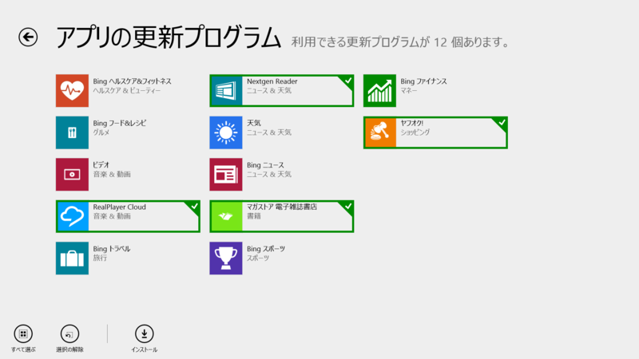
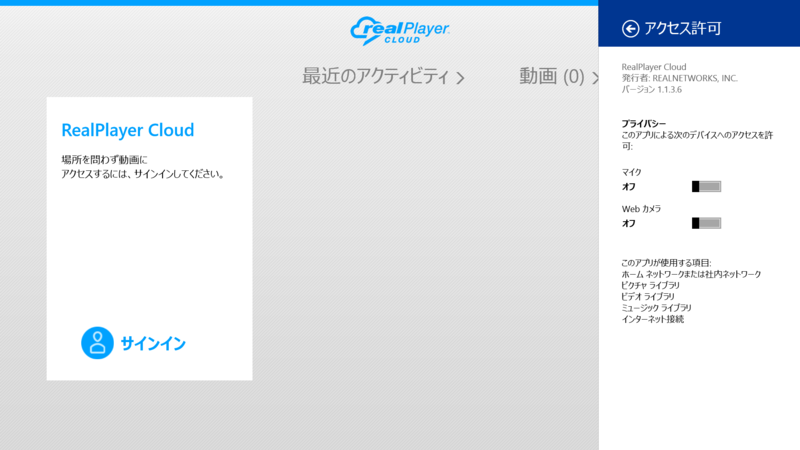
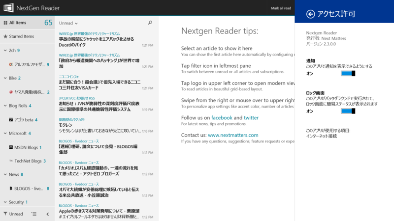

RealPlayer Cloud 1.1.3.6、Nextgen Reader 2.3.0.0、マガストア 電子雑誌書店 1.0.0.7、ヤフオク! 2.2.0.0
執筆日時：

お次はビルトインアプリ以外。
RealPlayer Cloud 1.1.3.6

更新点なし。もう VLC for Windows 8 でいいかな。
Nextgen Reader 2.3.0.0

Support: If you have any questions, comments, feature requests, or experience a crash or bug, please contact us at http://nextmatters.com/.
What's new in v2.3
- New: Smart search (requires @feedlypro account for complete search results).
- New: Quickly show/hide read items and feeds.
- New: Easily collapse or expand all folders.
- New: Right click on a feed/article in the list for context menus.
- New: Option to launch browser in full screen.
- New: Keyboard shortcuts - Y: show/hide read items, Z: focus reading pane, etc.
- Moved: Manage section to settings charm.
- Improved: Better handling for login/sync errors during first time setup.
- Several bug fixes and many other enhancements.
「Share full article」がクソ便利。「New: Option to override dates and times format according to your region.」は要再起動。Buffer - A better way to share on social media っていうサービスは寡聞にして知らなかった。あとで試してみよう。（v2.1 の変更点だった）